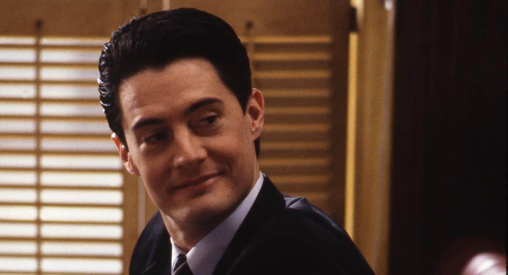
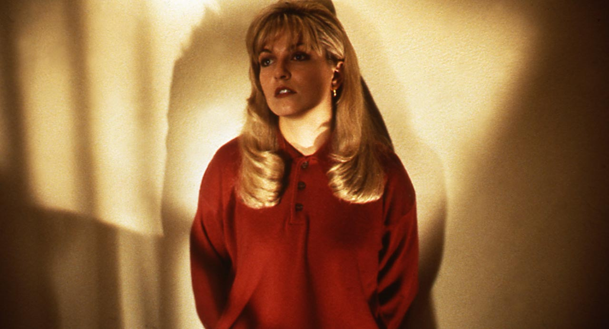
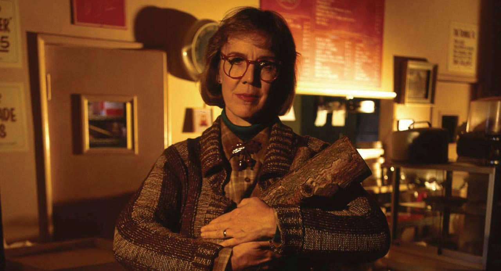
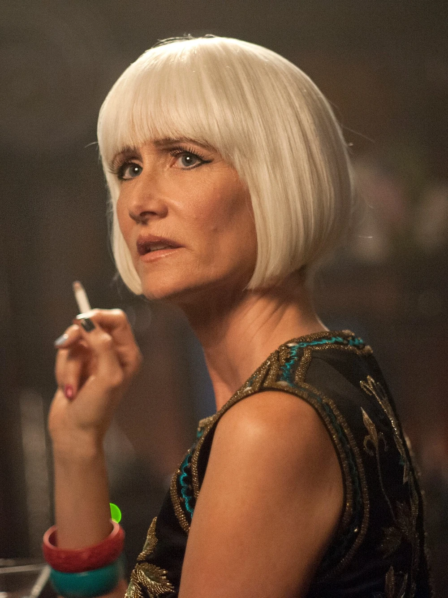
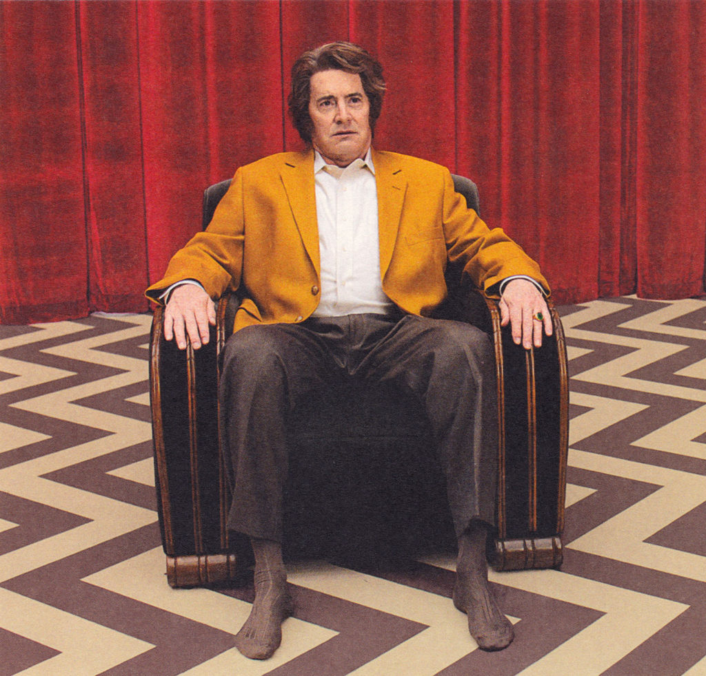
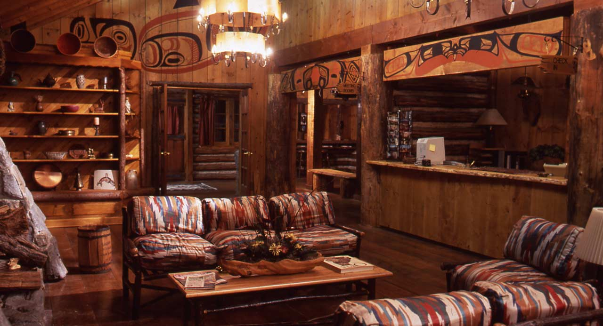
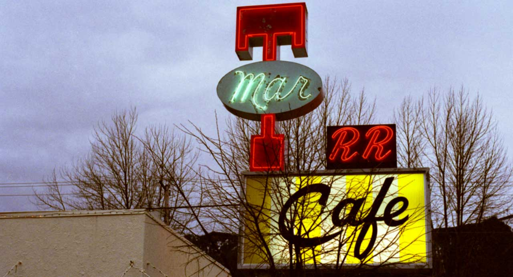
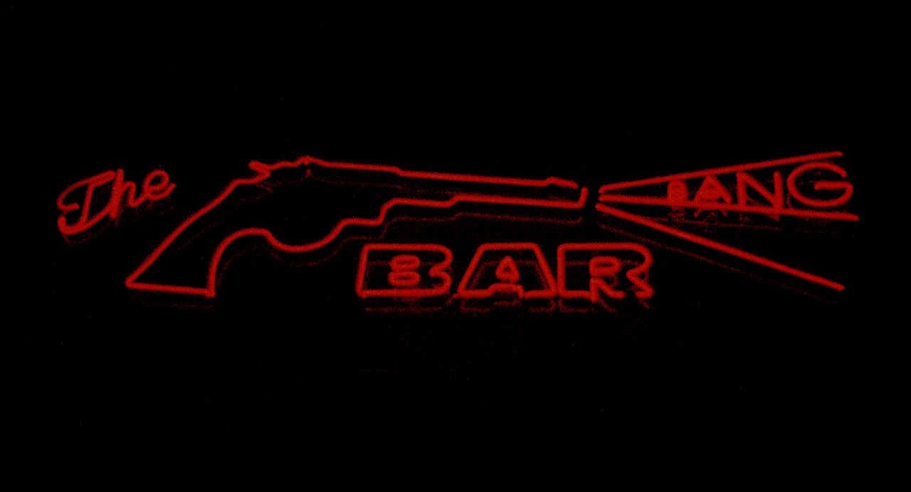
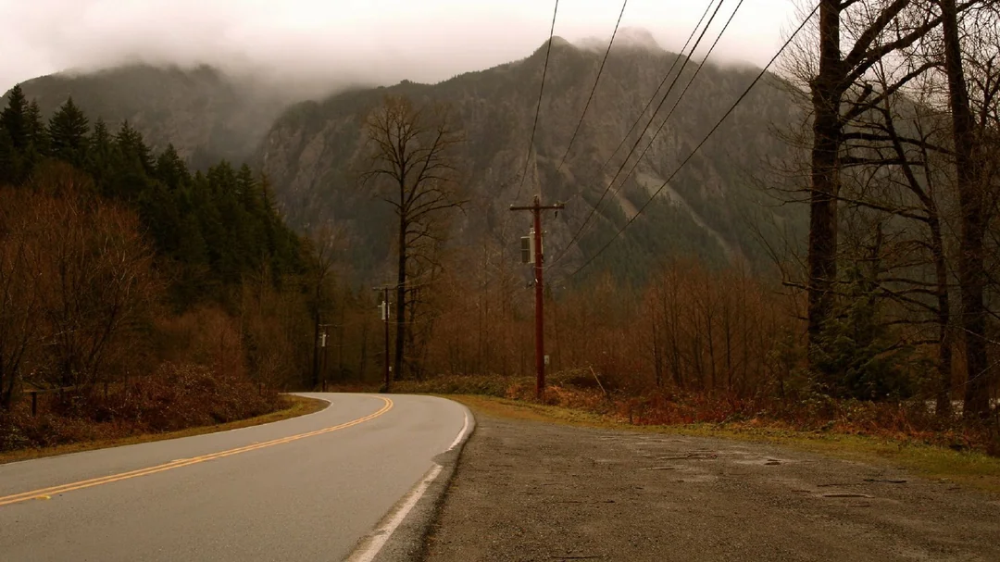

Dale Cooper
Un agente atento a los sueños, al café y a las señales más pequeñas.

Un pueblo entre pinos y secretos
Donde una pregunta imposible transforma un pueblo sereno en un sueño inquietante.
Tras el asesinato de Laura Palmer, Twin Peaks revela un entramado de afectos, silencios y violencias ocultas. El agente Dale Cooper llega al pueblo y encuentra una investigación policial que se abre, capítulo a capítulo, hacia lo sobrenatural.
La serie creada por David Lynch y Mark Frost une melodrama, policial y surrealismo con una extraña ternura por sus habitantes. Cada taza de café, cada bosque de pinos y cada cortina roja parece guardar una clave que el pueblo prefiere no nombrar en voz alta.
Vidas suspendidas entre lo cotidiano y lo imposible.

Un agente atento a los sueños, al café y a las señales más pequeñas.

La ausencia que obliga al pueblo entero a mirarse de frente.

Una voz serena que escucha historias desde el corazón del bosque.

Confidente de Cooper y presencia decisiva en los nuevos umbrales.

Un doble inesperado que vuelve extraña la vida suburbana.

Ingenio, deseo y una voluntad imposible de domesticar.
Los lugares de la ficción son, casi todos, lugares reales.

El hotel domina el pueblo con su madera, sus pasillos y sus vistas.

Café caliente, tartas memorables y la conversación que no llega a terminar.

La noche toma forma en canciones, encuentros y despedidas.

El límite del pueblo está siempre cerca, aunque nunca sea sencillo cruzarlo.
La mayoría de las locaciones son lugares reales del estado de Washington, Estados Unidos, sobre todo en las localidades de North Bend y Snoqualmie. Hoy se puede armar un recorrido real siguiendo esos puntos.
El Double R Diner se filmó en Twede's Café, todavía en funcionamiento en North Bend; el Great Northern toma la fachada del Salish Lodge, junto a las cataratas de Snoqualmie que aparecen en la apertura de la serie. Ambos siguen recibiendo visitas de fans de todo el mundo.
David Lynch dirigió el mundo de Twin Peaks hacia una lógica de intuiciones, texturas y pesadillas. Junto a Mark Frost, cocreador de la serie, construyó un relato donde lo absurdo no debilita el misterio: lo vuelve más humano.
Conocé más sobre la serie